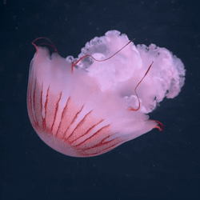
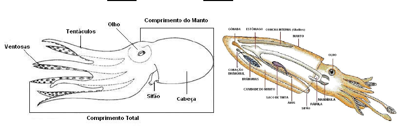
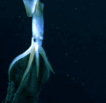
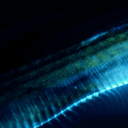
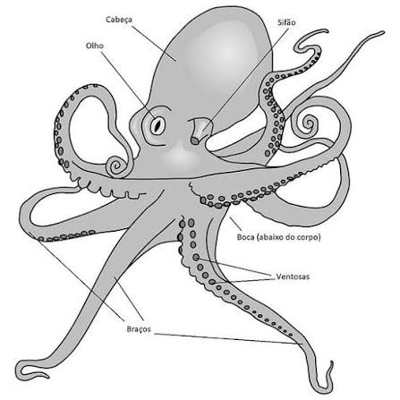
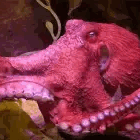

🠔 inicio 𓆝 ----𓆞---- 𓆟 Mamíferos ➔


Moluscos são animais invertebrados do filo Mollusca, caracterizados por ter um corpo mole e, em muitos casos, uma concha externa. Eles vivem principalmente em ambientes aquáticos, tanto em água doce quanto salgada, e incluem espécies como caranguejos, polvos, lulas e estrelas-do-mar.

Os moluscos desempenham papéis importantes nos ecossistemas, atuando como herbívoros, predadores e presas para outros animais. Além disso, muitos moluscos são utilizados na alimentação humana e têm valor econômico e cultural em diversas regiões do mundo.
Os moluscos apresentam uma grande diversidade de formas, tamanhos e adaptações. Algumas características comuns incluem a presença de um corpo mole, a capacidade de secretar uma concha calcária (em algumas espécies), um sistema digestivo completo e a presença de órgãos sensoriais desenvolvidos. Além disso, muitos moluscos possuem um pé muscular que lhes permite se locomover ou se fixar em superfícies.

Curiosidade: os moluscos formam um grupo extremamente diverso. Enquanto alguns possuem conchas resistentes para proteção, outros, como os polvos, não possuem uma concha externa.


Os polvos são moluscos marinhos pertencentes ao grupo dos cefalópodes, o mesmo grupo das lulas, sépias e náutilos. Eles são conhecidos principalmente por possuírem oito braços ao redor da boca.
Os braços dos polvos apresentam ventosas que permitem agarrar objetos, capturar alimentos e explorar o ambiente ao seu redor. Essas estruturas são muito importantes para a alimentação e movimentação desses animais.
Os polvos também possuem um sistema nervoso bastante desenvolvido e são capazes de apresentar comportamentos complexos, como explorar objetos e solucionar alguns tipos de problemas.
Muitas espécies conseguem alterar rapidamente a aparência do corpo. Mudanças de cor e padrões podem ser utilizadas para camuflagem, comunicação e defesa contra possíveis predadores.

Inteligência: Os polvos são considerados animais inteligentes, capazes de aprender, resolver problemas e se adaptar a diferentes situações.
Oito braços: Os polvos possuem oito braços musculosos cobertos por ventosas, utilizados para movimentação, exploração e captura de alimentos.
Ventosas: As ventosas permitem que o animal segure objetos e perceba diferentes características do ambiente.
Camuflagem: Muitas espécies conseguem alterar rapidamente a cor e os padrões da pele para se esconder, se comunicar ou reagir a ameaças.
Corpo flexível: Como não possuem esqueleto rígido nem concha externa, os polvos conseguem passar por espaços muito estreitos.
Respiração: Os polvos respiram através de brânquias, retirando da água o oxigênio necessário para sobreviver.
Alimentação: São predadores e podem se alimentar de crustáceos, peixes e outros moluscos.
Defesa: Além da camuflagem, muitas espécies podem liberar uma substância semelhante a tinta na água para confundir predadores e facilitar sua fuga.
Alguns dos polvos mais conhecidos incluem:

Curiosidade: os polvos possuem três corações. Dois ajudam a enviar sangue para as brânquias, enquanto o terceiro bombeia sangue para o restante do corpo.